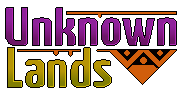

Em meio ao mar esquecido pelo tempo, ergue-se uma terra maldita, cercada por lendas, ruínas e criaturas que desafiam a razão. Dizem que ali repousa uma arma ancestral, forjada em dor e destinada a despertar apenas quando o mundo estiver à beira do colapso. Você representará Will, um jovem membro de uma tripulação pirata — corajoso, mas impulsivo — que, por obra do destino (ou talvez de algo mais sombrio), encontra-se separado de sua própria alma ao descobrir essa arma lendária e amaldiçoada. Agora, vagando entre o mundo dos vivos e o etéreo, Will precisa recuperar os fragmentos de si mesmo, enfrentar inimigos que refletem seus medos mais profundos e descobrir a verdade por trás da espada que carrega. Uma verdade que pode condenar ou libertar tudo o que ele conhece. Unknown Lands é uma jornada de ação e mistério em estilo metroidvania, com combates intensos, exploração não-linear e uma narrativa que mistura fantasia sombria com elementos clássicos dos jogos retro.